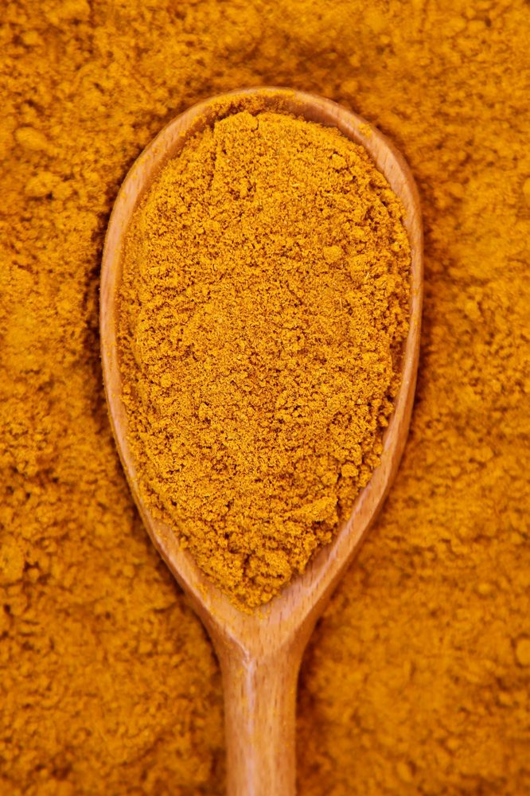

Натурална билкова смес · 8 съставки
Куркума, джинджифил, канела и още пет лечебни подправки: съчетани в точното съотношение. Клиентите на магазин Сусам споделят за прилив на енергия, по-добро самочувствие и намалени ставни болки при редовна употреба.

Смес „Здраве” е комбинация от осем подправки, която екипът на Susam.shop е събрал след години разговори с клиенти. Хората са идвали с конкретни оплаквания: ставни болки, висока кръвна захар, умора – и са искали да знаят кое би им помогнало. С времето се оформи ясна картина кои осем съставки работят добре заедно.
Предназначена е за хора, които не искат хапчета за всеки проблем, а търсят нещо естествено и проверено в практиката. Когато тя се превърне в допълнение към нормалния начин на живот, много хора споделят, че се чувстват по-добре. Важно е и да се каже обаче, че сместа е хранителна добавка и не замества лекарствата.
Когато преди повече от 20 години открихме магазина, не предполагахме, че половината клиенти ще използват подправките не само за готвене, а и за здраве. Тяхното споделяне ни вдъхнови да създадем тази смес – вече три години тя помага на хора да се чувстват отлично.
— Екипът на Susam.shop, гр. ДобричПодходяща за всекидневна употреба – особено при три конкретни оплаквания, с които клиентите идват най-често.
Клиентите споделят, че след редовен сутрешен прием се чувстват по-живи и с по-добро настроение. Джинджифилът и кардамонът са двете съставки, за които хората говорят най-много в тази връзка.
Куркумата, канелата и карамфилът работят в тази посока — затова и трите са включени в сместа. Не замества лечение, но е добро допълнение към него.
Клиентите с артрит са тези, дето най-много се връщат за нова опаковка. Куркуминът е един от най-изследваните природни вещества срещу възпаления.
Джинджифилът и карамфилът подпомагат имунната система. Клиентите, които започват прием около два месеца преди настъпването на грипния сезон, споделят, че по-лесно прескачат настинките през есента и зимата.
Всяка от осемте съставки е вкарана с конкретна цел. Заедно те се допълват — ефектът на едната усилва ефекта на другата.
Куркумата и кориандърът подкрепят черния дроб и бъбреците, а ябълковият пектин помага за изхвърлянето на тежки метали от тялото.
Джинджифилът ускорява метаболизма чрез топлинния си ефект, а кардамонът енергизира. Клиентите споделят, че разликата се усеща най-ясно сутрин.
Канелата, куркумата и карамфилът имат доказано действие при регулиране на нивата на кръвната захар — три съставки с тази цел в едно.
Ябълковият пектин е особено ефективен при контрол на холестерола. Изследванията го свързват и с по-добро сърдечносъдово здраве.
Кардамонът и куркумата се свързват с по-чиста и светла кожа. Ефектът не е моментален, но клиенти, приемащи сместа редовно, го забелязват.
Куркуминът е един от най-изследваните природни противовъзпалителни агенти. Черният пипер в сместа засилва усвояването му с до 2000%.
Поръчайте онлайн с доставка до офис или адрес навсякъде в България.
Поръчай от susam.shopНищо не е сложено случайно. Ето защо са точно тези осем съставки и какво прави всяка от тях.
Основата на сместа. Куркуминът — активното вещество — е един от най-изследваните природни противовъзпалителни агенти. Подобрява храносмилането, укрепва костите и детоксикира черния дроб.
Ускорява метаболизма чрез топлинния си ефект. Повишава имунитета и подпомага дихателната система — особено полезен в студените месеци.
Богат на витамини К и С. Подобрява бъбречната функция и помага на тялото да изхвърли нежеланите вещества. Добавя мек, свеж аромат към сместа.
Регулира кръвното налягане и нормализира нивата на кръвна захар. Ключова съставка при диабетна подкрепа, и едната от причините сместа работи при хора с тези проблеми.
Съдържа евгенол — мощен природен антиоксидант. Регулира кръвната захар, ускорява метаболизма и има антипаразитно действие.
Енергизира и подобрява кожата и косата. Подпомага бъбречната функция и насърчава детоксикацията — добра двойка с кориандъра в сместа.
Контролира телесното тегло, понижава холестерола и балансира кръвната захар. Едно от малкото природни вещества, за които е доказано, че помагат за изхвърлянето на тежки метали.
Сам по себе си не е лечебен тук — сложен е заради куркумата. Засилва усвояването на куркумина с до 2000%. Без него ефектът от куркумата се губи в значителна степен.
Два начина — студен и топъл. И двата отнемат под пет минути.
Разбъркайте 1 чаена лъжичка в айрян, вода, сок или прясно мляко. Консумирайте сутрин на гладно или вечер преди лягане.
Сварете 1 ч.л. в чаша вода за 3 минути. Прецедете и добавете лимон и мед на вкус. Подходящо за студените сутрини.
150 г стигат за месец при ежедневен прием. Вкусът е подчертано пикантен — ако нямаш навик, започни с половин лъжичка.
Сместа е хранителна добавка и не замества медикаментозно лечение. При съмнения или хронични заболявания се консултирайте с лекар.
Смес „Здраве” се продава директно от щанда на Susam.shop на Общинския пазар в Добрич. Ако не сте от Добрич, можете да поръчате онлайн с доставка до всеки адрес в страната.
Susam.shop — Подправки на едро и дребноОбщински пазар, пл. „Македония” 6, гр. Добрич
Работно време:
понеделник – петък, 9:00 – 18:00;
събота, 9:00 – 14:00;
неделя – затворено
Susam.shop е семеен магазин на Общинския пазар в Добрич. Продаваме подправки на едро и дребно от над двадесет години — от обикновена червена чушка до по-рядко срещани билки и специализирани смеси.
Смес „Здраве” е родена от разговорите с клиентите. Хората идваха и питаха: кое помага за ставите, кое за захарта, кое за имунитета. С времето стана ясно, че има осем подправки, за които едни и същи хора се връщат отново и отново. Решихме просто да ги съберем заедно.
Изпращаме поръчки с Еконт и Спиди до всяка точка на страната.
Посети susam.shopДоставка с Еконт или Спиди до офис или адрес навсякъде в България.